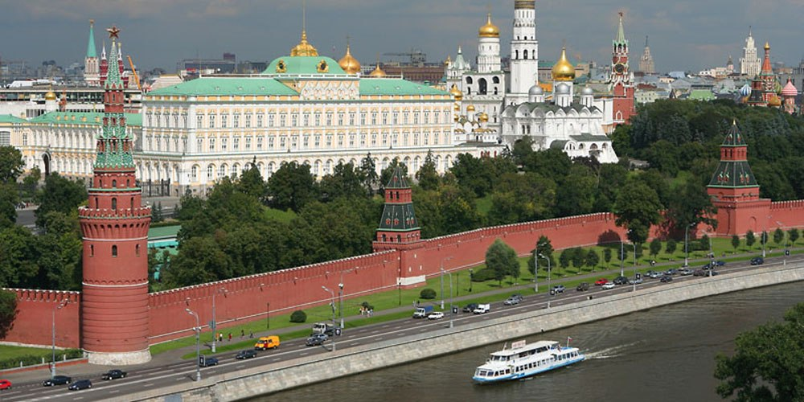
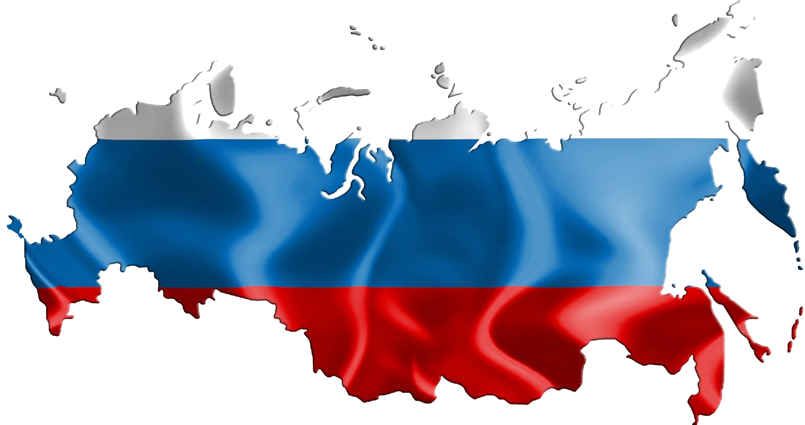

"Сайт в котором вы узнаете немного больше о городе Москва"
Москва — столица Российской Федерации, крупнейший город страны и один из важнейших культурных, экономических и политических центров мира. Город расположен в центре Европейской части России, на реке Москве. В Москве находится резиденция Президента РФ, правительство страны, многие федеральные органы власти, посольства иностранных государств и международные организации.
История города началась в XII веке. Первое письменное упоминание о Москве относится к 1147 году в летописи, где князь Юрий Долгорукий пригласил своего союзника князя Святослава Ольговича на встречу в Москву. С тех пор Москва стала расти и развиваться, превратившись в важный политический центр.
Москва расположена на востоке Восточно-Европейской равнины, на обоих берегах реки Москвы. Рельеф города преимущественно равнинный, хотя встречаются небольшие холмы и возвышенности. Климат умеренно-континентальный, с холодной зимой и теплым летом.
По данным переписи населения, население Москвы составляет около 12 миллионов человек, что делает её одним из крупнейших городов Европы. В столице проживает большое количество мигрантов из различных регионов России и стран СНГ, что способствует культурному разнообразию города.
Система образования включает в себя многочисленные университеты, среди которых Московский государственный университет имени М.В. Ломоносова, Российский экономический университет имени Г.В. Плеханова и другие ведущие учебные заведения.
Архитектурный облик Москвы весьма разнообразен. Исторический центр города представлен Кремлем, Красной площадью и собором Василия Блаженного. Современные здания, такие как башня "Федерация" в деловом центре "Москва-Сити", гармонично сочетаются с историческими памятниками.
Москва — это уникальный город, сочетающий в себе богатое историческое наследие, динамичное развитие и стремление к будущему. Это город контрастов, где старинные храмы соседствуют с современными небоскрёбами, а традиционные ремесла уживаются с высокими технологиями.